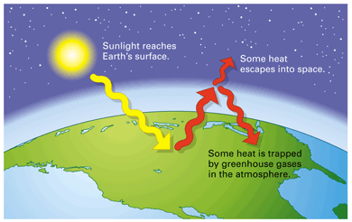

Objectives
- Describe the path of carbon in the carbon cycle.
- Explain how photosynthesis is related to climate.
Key Terms
For the past several chapters, you have been navigating the microscopic world of cells as though you were a miniature explorer. Now imagine you could zoom out into space and look at planet Earth as a whole. Keep reading to see how these cellular processes fit into your new perspective of life on Earth.
The Carbon Cycle
Some of the processes that occur on a global scale on Earth depend on the metabolism of tiny chloroplasts and mitochondria. An example is the carbon cycle, the process by which carbon moves from inorganic to organic compounds and back. Through photosynthesis, producers such as grass convert inorganic carbon dioxide to organic compounds. Consumers such as a Cape buffalo obtain the organic compounds by eating the producers. Cape buffalo may in turn be eaten by a lioness or another consumer. Ultimately, cellular respiration by both producers and consumers returns carbon dioxide to the atmosphere.
No other chemical process on the planet matches the output of photosynthesis. Earth's plants and other photosynthetic organisms make about 160 billion metric tons of organic material per year. That's about equal to 80 trillion copies of this book—25 stacks of books reaching from Earth to the sun!
Photosynthesis and Global Climate
As you have just read, a key element of the carbon cycle is carbon dioxide. Plants use carbon dioxide to make sugars in photosynthesis, and most organisms give off carbon dioxide as waste from cellular respiration. Though any one organism may use or produce relatively small amounts of carbon dioxide, the total effect of all the organisms on Earth has a very large effect on the amount of carbon dioxide in the atmosphere.
Before this century, carbon dioxide made up about 0.03 percent (300 parts per million) of Earth's atmosphere. This amount of carbon dioxide is enough to provide plants with plenty of carbon for photosynthesis. Carbon dioxide in the atmosphere also traps heat from the sun that would otherwise escape from Earth back into space (Figure 8-16). This important property, known as the greenhouse effect, keeps the world climate warm enough for living things. The greenhouse effect keeps the average temperature on Earth some 10°C warmer than it would be otherwise.
|  |
Figure 8-16
Some heat radiating from Earth's surface back out toward space is trapped by carbon dioxide (along with some other types of gases) in the atmosphere. This greenhouse effect keeps Earth warm enough for living things. |
In the past century, the amount of atmospheric carbon dioxide has been rising, reaching more than 360 parts per million. In Chapter 36, you'll read more about this change and about its possible effects.
Concept Check 8.4
1. Give an example of carbon moving from an inorganic compound to an organic compound in the carbon cycle. Give an example of carbon moving from an organic to an inorganic compound.
2. How is carbon dioxide important to Earth's climate?